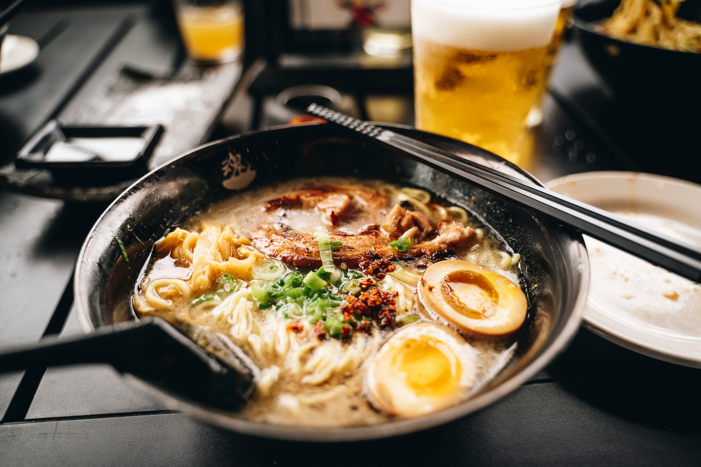
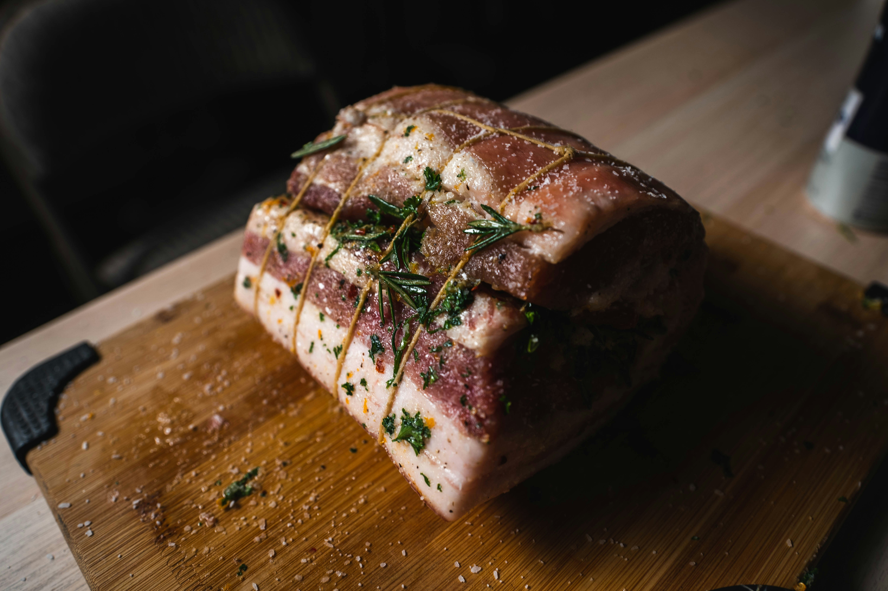
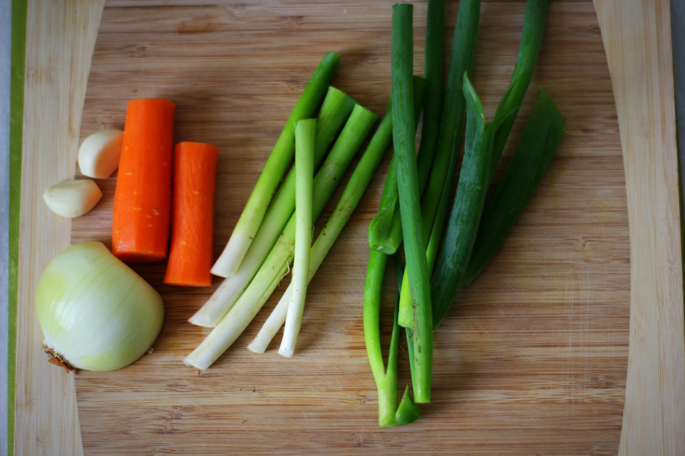
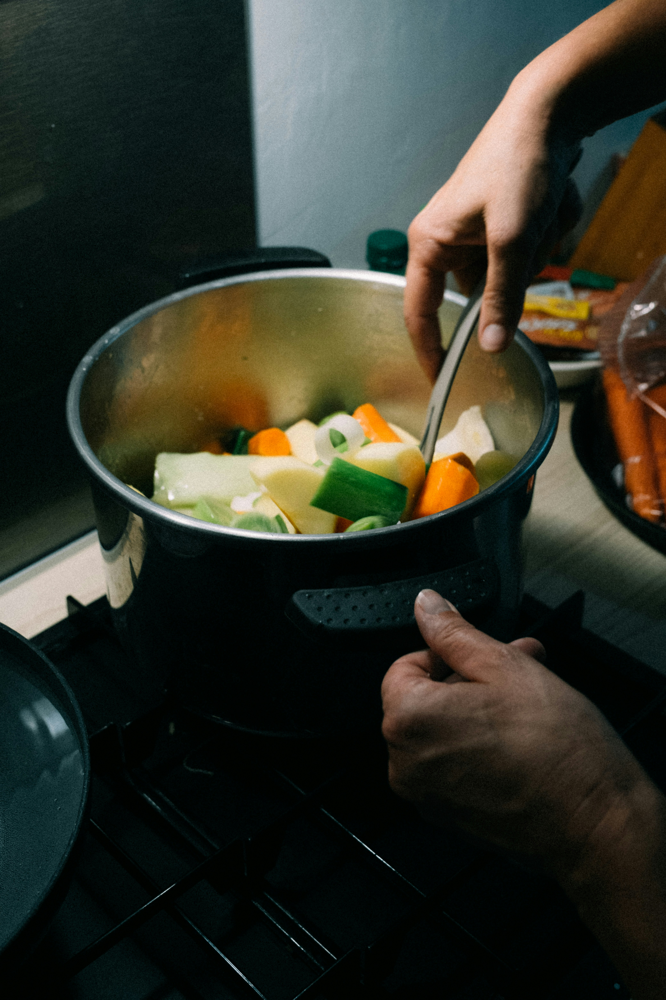

Ramen de panceta y pollo
Caldo de pollo y panceta en olla exprés, panceta marinada, huevos ajitsuke y fideos de ramen.

Ingredientes (para 4 personas)
Base del ramen
- Carcasa de pollo blanco – 1 pieza
- Panceta de cerdo entera – 1 pieza (≈300 g)
- Cebolla verde (negi) o cebolleta fresca – 1
- Parte verde del puerro – 2
- Zanahoria – 2
- Diente de ajo – 6 (de ellos 2 para el caldo y 4 para los huevos)
- Jengibre fresco – 6 rodajas (de ellas 3 para el caldo y 3 para los huevos)
- Setas shiitake frescas – 4
- Huevos – 4
- Salsa de soja – 200 ml
- Mirin – 60 ml
- Azúcar moreno – 25 g
- Fideos para ramen – 250 g
- Cebollino (opcional)
- Alga nori (opcional) – 1 lámina
- Aceite – 3 cucharada(s)
- Agua helada para cortar la cocción de los huevos
Otros
- Hilo de cocina (≈50 cm por cada panceta)
- Olla exprés
- Cacito
- Cazo
- Pinzas
- Cuchara
Elaboración
- Atamos la 1 panceta (o cada panceta) con hilo de cocina, juntando un extremo con otro. La piel debe quedar por fuera. Calentamos 3 cucharada(s) de aceite en la olla, marcamos la panceta por todos los lados hasta que esté dorada y reservamos. Desechamos el aceite de la olla en un recipiente apto una vez acabemos.
- Pelamos y lavamos las verduras: 1 cebolla(s), 2 parte(s) verde(s) de puerro, 2 zanahoria(s) y 2 diente(s) de ajo. Añadimos las verduras a la(s) olla(s).
- Limpiamos bien la tierra de 4 seta(s) shiitake y las secamos. Cortamos 3 rodaja(s) de jengibre y añadimos todo a la(s) olla(s).
- Añadimos 1 pieza(s) de pollo y la panceta a la(s) olla(s). Llenamos la(s) olla(s) de agua hasta que cubra todos los ingredientes, la cerramos y llevamos a ebullición (máxima potencia en vitro/fogón). Usaremos el modo de presión alta de la(s) olla(s) exprés, posición 2. Una vez empiece a salir vapor, ponemos un contador de 15 minutos. Cuando acabe, apagamos el fuego y dejamos que la presión de la olla baje antes de abrirla.
- Retiramos la panceta y 4 seta(s); serán el acompañamiento del ramen. Colamos el caldo y desechamos el resto de alimentos.
- Llenamos un cacito con agua y llevamos a ebullición (máxima potencia en vitro/fogón). Con una cuchara introducimos con cuidado 4 huevo(s) y dejamos que se cuezan 6 minutos. Una vez pasado ese tiempo, cortamos la cocción de los huevos introduciéndolos en el agua helada y los pelamos.
- Calentamos en un cazo 4 diente(s) de ajo, 3 rodaja(s) de jengibre, 200 ml de salsa de soja, 60 ml de mirin y 25 g de azúcar moreno. Una vez hiervan, retiramos del fuego y sumergimos 4 huevo(s) pelado(s) y la panceta hecha previamente. Marinamos durante 2 horas, volteando los ingredientes cada 30 minutos para que absorban bien la salsa.
- Finalmente, cocemos los fideos siguiendo las instrucciones indicadas en el paquete.
- Para montar el plato, quitamos el hilo de la panceta y cortamos en lonchas finas. Cortamos el/los huevo(s) por la mitad, picamos el cebollino, laminamos las setas y troceamos 1 lámina(s) de alga nori.
- Para servir: ponemos 4 cucharadas de marinado, una ración de caldo, una ración de fideos, dos mitades de huevo y la panceta cortada en cada bol.
- Listo! Tendremos un ramen japonés riquisimo para comer. Para conocer mas sobre este plato y su gran historia, consultad el siguiente video:


